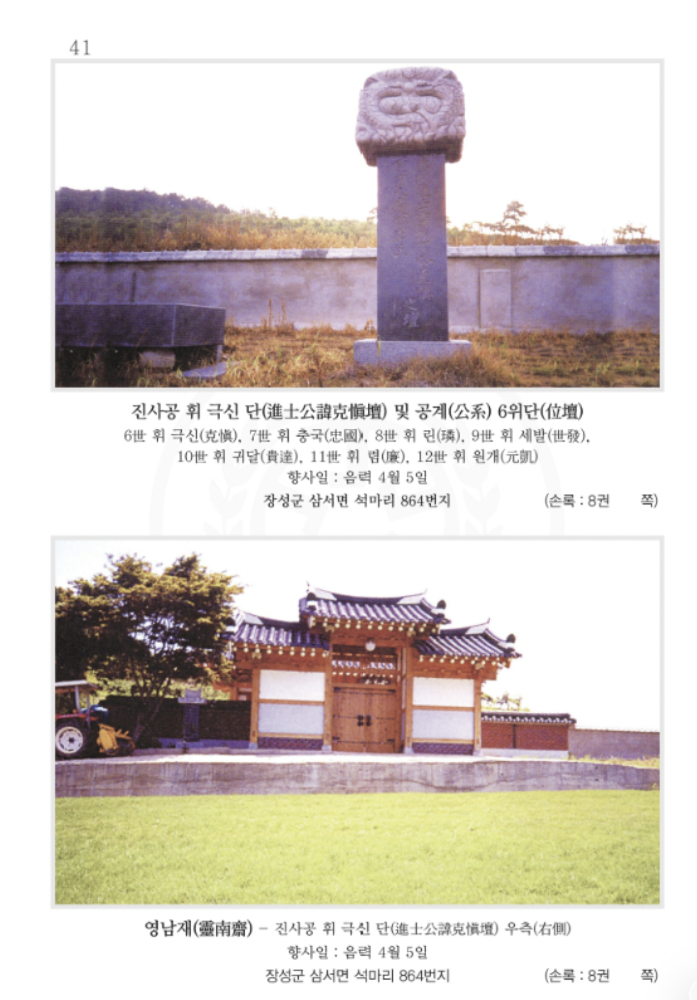

영남재 靈南齋진사공 휘 극신 단 우측의 재실
영남재 위치
- 주소
- 전라남도 장성군 삼서면 석마리 864번지
- 자료 표기
- 장성군 삼서면 석마리 864번지
- 관련 계통
- 압해정씨 영광파 진사공계파 · 진사공 휘 극신(克愼)
- 향사일
- 음력 4월 5일
자료 안내
첨부된 종중 자료에는 영남재가 진사공 휘 극신 단 우측에 있다고 표기되어 있습니다.
현장 방문 전에는 주변 여건과 출입 가능 여부를 확인해 주세요. 주소 정정이 있는 경우 종회 자료를 우선합니다.